Mapping mosquito activity from space
Methods, choices, and open questions in urban disease surveillance
![]()
2026-05-20
Motivation
The problem: dengue in urban areas
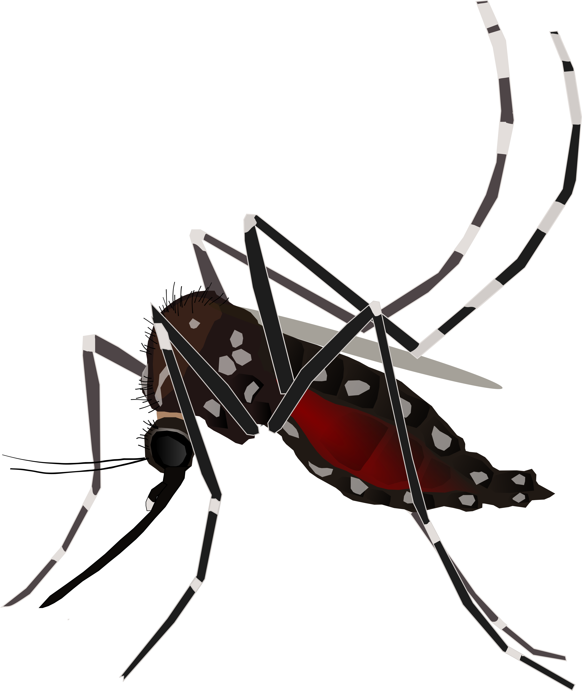
- Aedes aegypti is fully adapted to urban environments
- It transmits dengue, Zika, chikungunya, and yellow fever viruses
- Mosquito activity is not uniform across a city at any given time — Why?
If temporal activity patterns vary spatially, transmission risk might vary too — but no field data exist for most of a city, we only have a handfull of points most of the times.
Research questions
- Do distinct groups of temporal activity patterns exist among Ae. aegypti ovitraps?
- Are those patterns associated with local environmental conditions detectable from satellite imagery?
- Can we predict patterns city-wide — even where no field data exist?
- Do predicted patterns relate to observed dengue incidence?
Data
Field data from ovitrap surveillance
- Variable: weekly egg counts per ovitrap
- Location: Córdoba city, Argentina (~1.4 million inhabitants)
- Period: 2017–2019 (two full entomological seasons)
- Network: 300 ovitraps distributed across the urban area, 2 per household
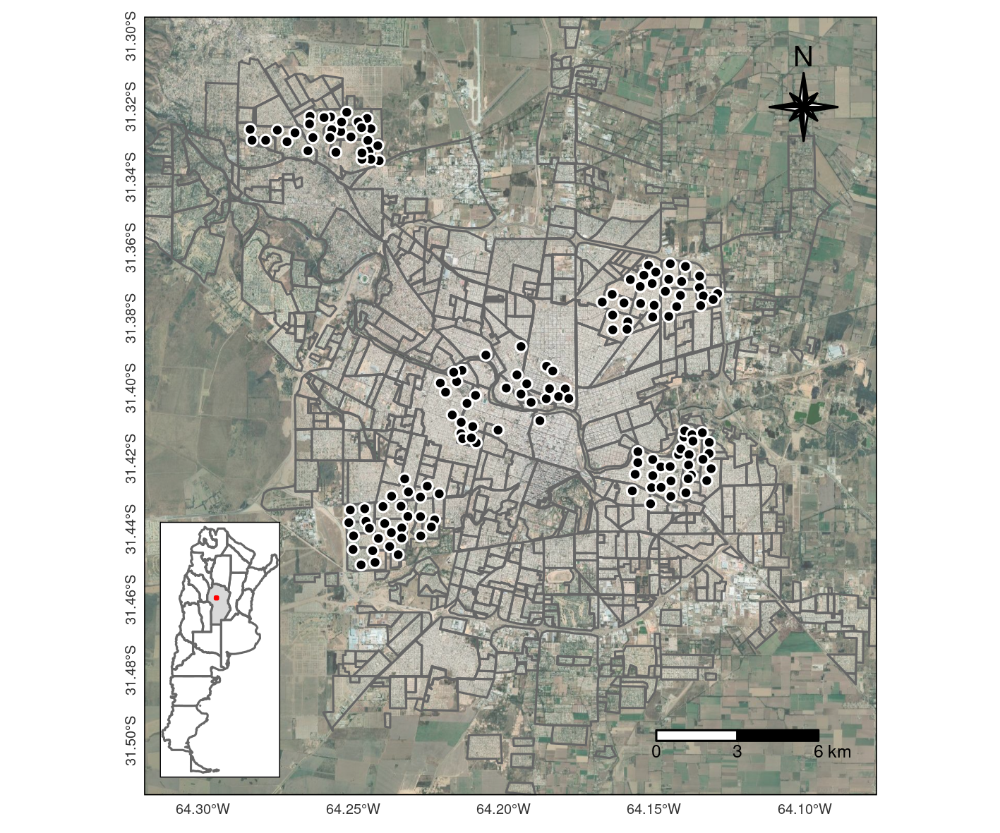
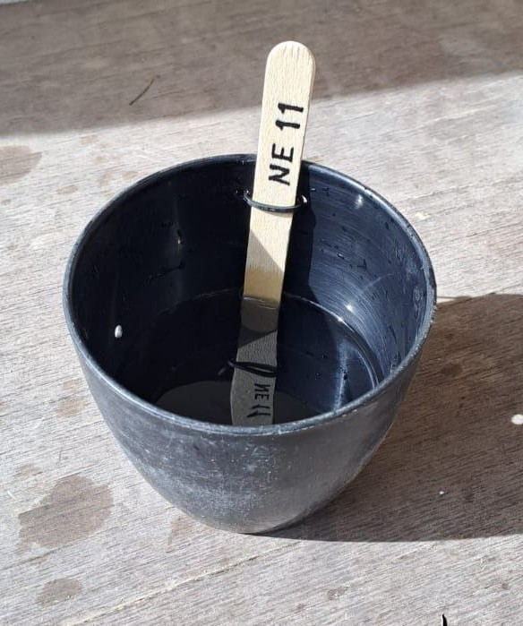
Ovitraps are inexpensive, passive traps — but sparse and heterogeneous across the city.
Satellite covariates: Sentinel-2
| Variable type | Derived product |
|---|---|
| Vegetation | NDVI (average, SD) |
| Humidity / water | NDWI, LSWI, MNDWI (average, SD) |
| Built environment | NDBI (average, SD) |
| Texture / heterogeneity | GLCM indices (contrast, entropy, correlation) |
| Land cover diversity | richness, diversity, mode |
All covariates were extracted over buffer areas of 50 and 100m radius around each ovitrap location.
Methods
Analytical pipeline
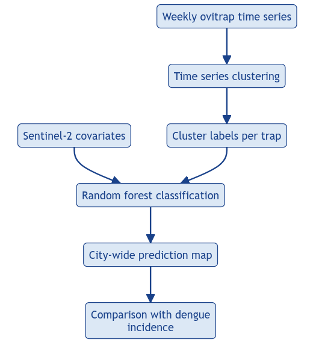
Step 1: Time series clustering
- Goal: discover groups of temporal patterns without prior labels
- Algorithms: partitional time series clustering for different periods
- Validation: internal cluster validity indexes
| Distance | Centroid | Pre-Processing | Configurations |
|---|---|---|---|
| DTW | DBA | Normalization | 1600 |
| DTW_LB | DBA | Normalization | 1600 |
| DTW | PAM | Normalization | 1600 |
| DTW_LB | PAM | Normalization | 1600 |
| SBD | PAM | Normalization | 160 |
| SBD | Shape extraction | Normalization | 160 |
Refs.: DTW, Dynamic Time Warping; DTW_LB, DTW Lower Bounds; DBA, DTW Barycenter Averaging; PAM, Partition Around Medoids; SBD, Shape Based Distance.
Step 2: Feature extraction & classification
- Each household → feature vector from Sentinel-2 covariates
- Random forest classifier trained on labelled groups (cluster assignments) for different periods
- Key challenge: class imbalance –> up-sample
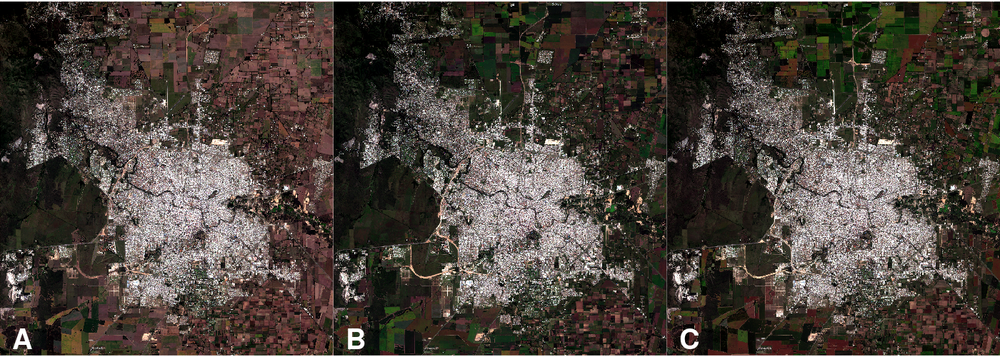
Step 3: City-wide prediction
- Apply trained RF models to all pixels in Córdoba’s urban area
- Each pixel gets a predicted temporal pattern class
- Result: raster maps of expected Ae. aegypti temporal behaviour
Step 4: Validation against dengue incidence
- Aggregate predicted class proportions per neighbourhood
- Correlate with dengue incidence (cases / 10,000 inhabitants)
- Spearman’s ρ, visual inspection of spatial concordance
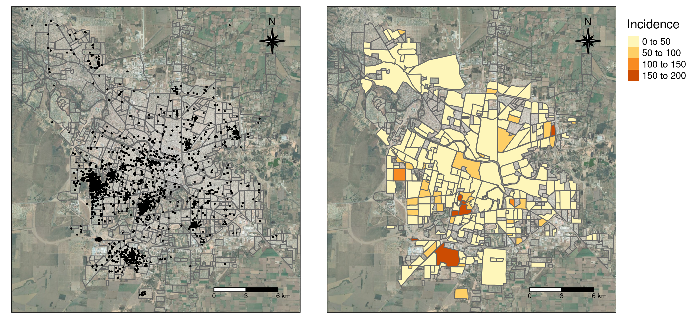
Results
Ovitrap time series
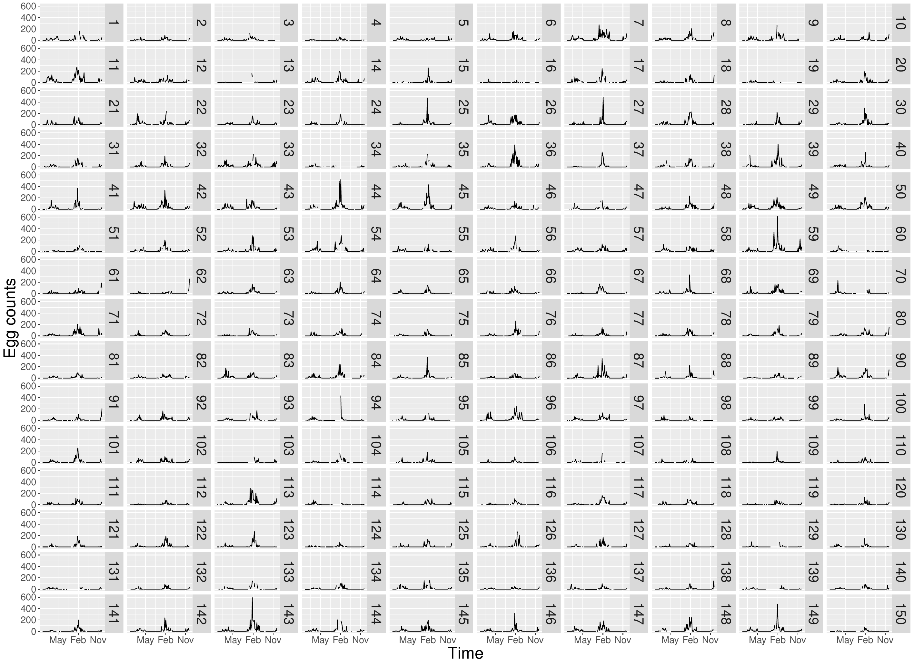
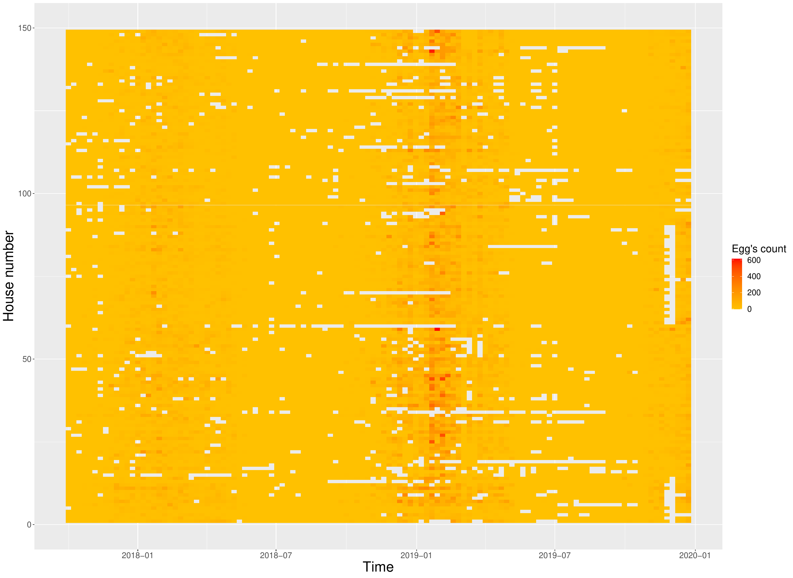
Three temporal patterns
2017–2019 2017–2018 2018–2019
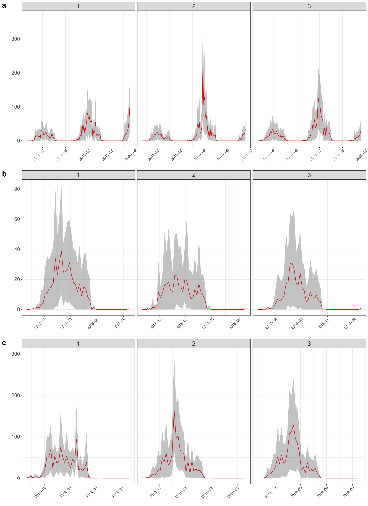
Three temporal patterns - cont.
| Series | Cluster | n | MSD | MED | Duration (days) | Max eggs | Mean max eggs | Date of max |
|---|---|---|---|---|---|---|---|---|
| 2017–2018 | 1 | 70 | 20 Nov 2017 | 7 May 2018 | 168 | 205 | 73 | 1 Feb 2018 |
| 2 | 30 | 4 Dec 2017 | 7 May 2018 | 154 | 155 | 55 | 15 Jan 2018 | |
| 3 | 43 | 27 Nov 2017 | 30 Apr 2018 | 154 | 196 | 74 | 29 Jan 2018 | |
| 2018–2019 | 1 | 10 | 25 Oct 2018 | 29 Apr 2019 | 186 | 274 | 127 | 11 Feb 2019 |
| 2 | 88 | 5 Nov 2018 | 29 Apr 2019 | 175 | 594 | 190 | 21 Jan 2019 | |
| 3 | 45 | 29 Oct 2018 | 29 Apr 2019 | 182 | 615 | 206 | 4 Feb 2019 |
Three temporal patterns - cont.
- Median end date consistent across groups and periods
- Median start date more variable — drives differences in season length
- 2018–2019 season started ~1 month earlier than 2017–2018
- Oviposition season ~20–30 days longer in 2018–2019
- Mean peak egg counts 2–3× higher in 2018–2019
- Date of peak similar between seasons
Three temporal patterns - cont.
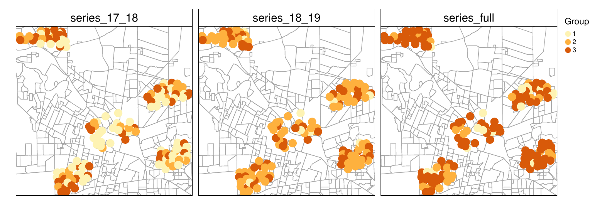
- Cluster sizes and cluster spatial distribution differed among periods.
- One large group and the other two much smaller.
Environmental associations
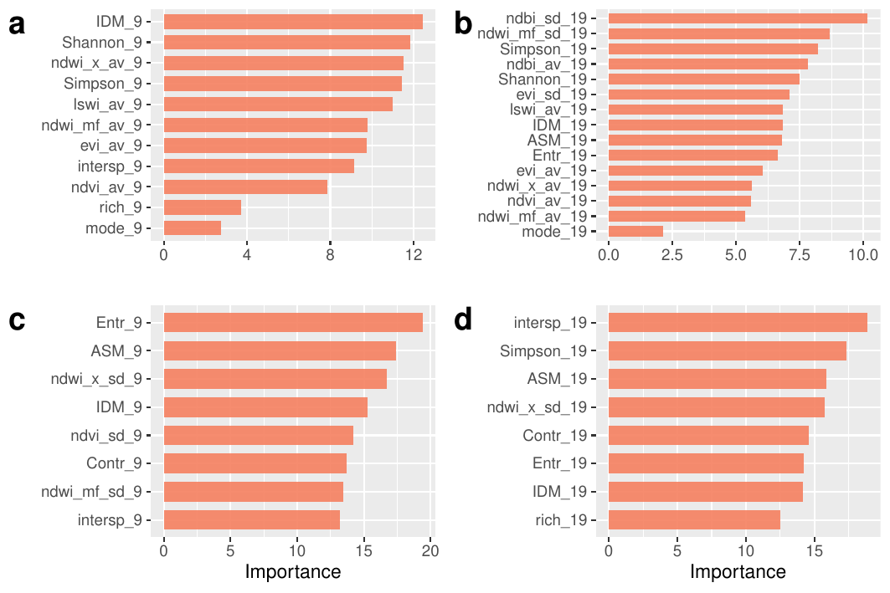
Variables most associated with pattern membership:
- Land cover diversity (Shannon and Simpson indices)
- Built-up index (NDBI)
- Humidity-related indices (NDWI)
- Texture heterogeneity (IDM, ASM, entropy, interspersion)
City-wide prediction maps
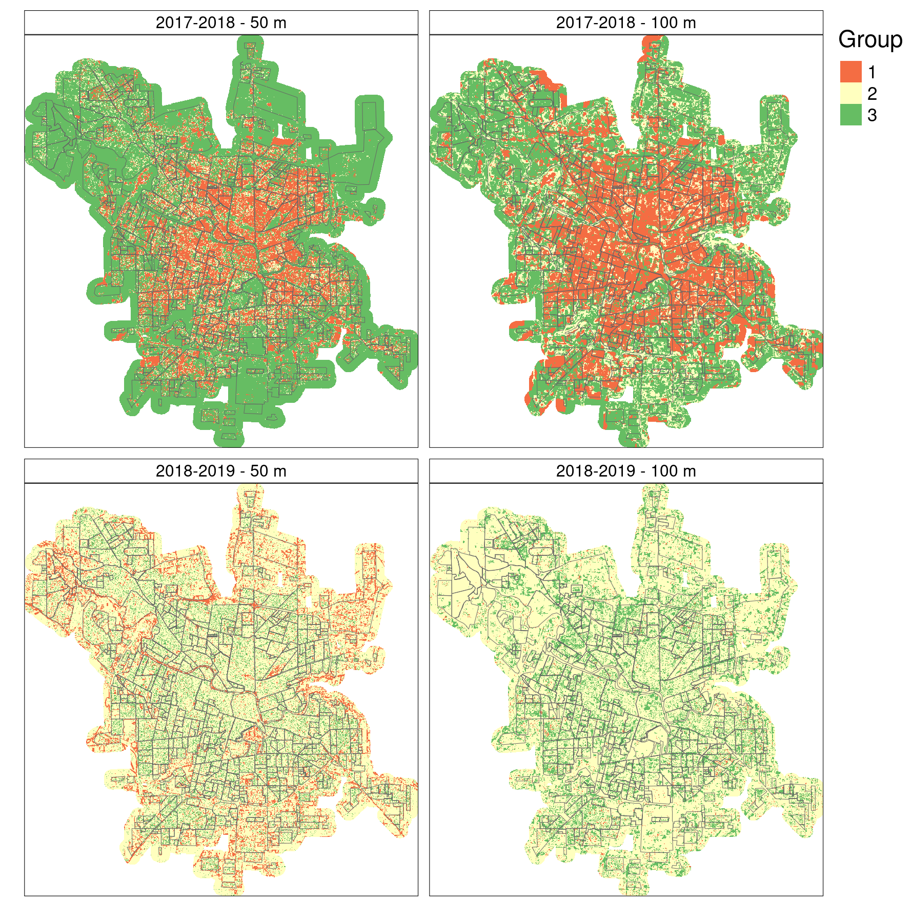
City-wide prediction maps - cont.
| Buffer | 2017–2018 | 2018–2019 | |
|---|---|---|---|
| Train | 50 m | 0.733 (0.083) | 0.822 (0.051) |
| Train | 100 m | 0.730 (0.080) | 0.778 (0.090) |
| Test | 50 m | 0.381 | 0.524 |
| Test | 100 m | 0.476 | 0.500 |
We used 2018-2019 to predict temporal pattern distribution for 2019-2020.
City-wide prediction maps - cont.
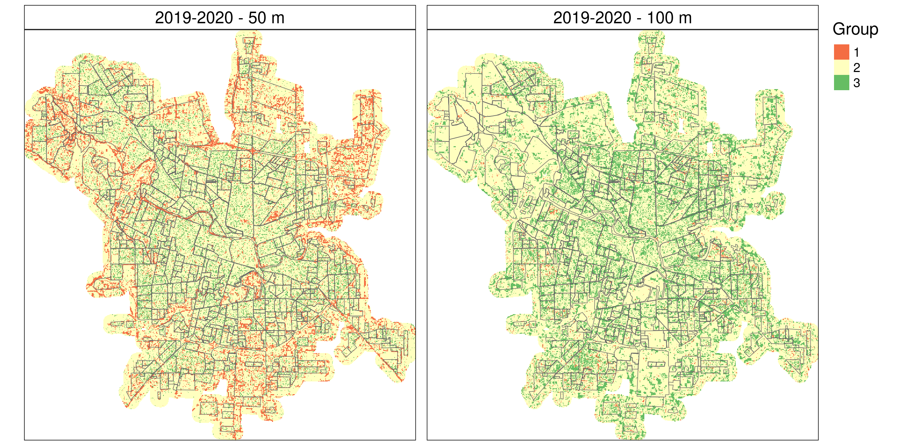
- Matrix of group 2 (high egg counts, early increase of activity), group 3 (high egg counts) within urban fabric, and group 1 (low activity, no defined peak) in border and green areas
Relationship with dengue incidence
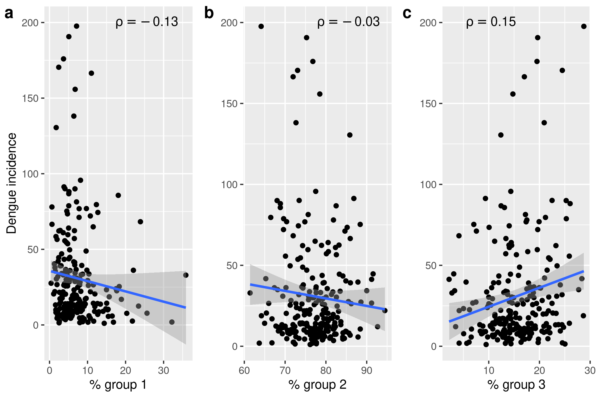
- Weak but positive association between proportion of group 3 pixels and neighbourhood-level dengue incidence (ρ ≈ 0.3, p < 0.05)
Discussion
Summary
- Novel combination of time series clustering + remote sensing + machine learning to link oviposition patterns with dengue
- 3 temporal groups found across periods — associated with land cover diversity, vegetation/water variability, and texture heterogeneity (50 & 100 m buffers)
- Dengue incidence showed only weak association with predicted pattern proportions at neighbourhood level
Temporal patterns across seasons
- 2018–2019 season: started ~20–30 days earlier and had 2–3× higher egg counts than 2017–2018
- Both seasons share the same structure: one low-activity group + two higher-activity groups differing in peak timing and height
- The most frequent group in each season is also the riskiest (G1 in 2017–18; G2 in 2018–19)
- A third intermediate group exists, but remains closer to the riskier patterns in egg counts
- That intermediate group’s spatial coverage was the only one positively associated with neighbourhood dengue incidence
- Temporal patterns can guide where and when to prioritise surveillance
Spatial distribution of temporal patterns
- All 3 patterns appear across different city areas → driven by local landscape factors
- 2017–2018: riskier pattern (G1) covers up to 34% of the city interior; low-activity group more scattered
- 2018–2019: riskier pattern (G2) dominates ~75% of the city; low-activity group confined to outskirts and greener areas
- 2019–2020 predictions mirror 2018–2019 — likely due to similar weather and environmental conditions
- Riskiest pattern most widespread under favourable weather → greater challenge for surveillance and breeding-site elimination
- Wide dominance of high-risk patterns greatly increases dengue outbreak potential if imported cases trigger virus circulation
Environmental drivers of temporal patterns
- 2018–2019: texture measures + variability in vegetation & water indices
- G2 and G3: Higher entropy, lower IDM & ASM (less homogeneity/uniformity), higher SD of water & vegetation indices
- locally heterogeneous, vegetated microenvironments favour higher and earlier oviposition peaks?
- 2017–2018: diversity measures and average vegetation/water conditions more relevant — but accuracy was much lower
Limitations
- No ground truth for cluster validation — patterns are data-driven, not externally labelled
- Up-sampling to balance small clusters may have inflated training accuracy vs. test accuracy
- Small cluster sizes (esp. low-activity groups) may explain their under-prediction in city-wide maps
- Weather variables (temperature, precipitation) excluded — micro-climate differences could explain part of the variation
- Human behaviour around traps unaccounted for (plant watering, container management, pets, etc.)
Open questions
- Are the 3 patterns stable across years and cities?
- Can early-season satellite imagery predict the coming season’s pattern?
- Would other methods capture different patterns?
- How to better deal with unbalanced classes?
Conclusions
Take-home messages
- Ae. aegypti temporal activity is spatially heterogeneous within cities
- That heterogeneity is predictable from freely available satellite imagery
- Sentinel-2 + random forest = a practical, scalable surveillance tool
- The spatial distribution of patterns has epidemiological relevance (dengue)
- Open-source tools (GRASS, Python, R) make this workflow transferable
Implications for public health
Understanding where and when mosquitoes are most active — without exhaustive field campaigns — can:
- Guide targeted vector control interventions
- Support early warning systems
- Improve allocation of surveillance resources
- Feed into dengue risk models at urban scale
Thanks!
References & resources
Paper:
Andreo, V., Porcasi, X., Guzman, C., Lopez, L. & Scavuzzo, C.M. (2021). Spatial distribution of Aedes aegypti oviposition temporal patterns and their relationship with environment and dengue incidence.
Insects, 12(10), 919. https://doi.org/10.3390/insects12100919